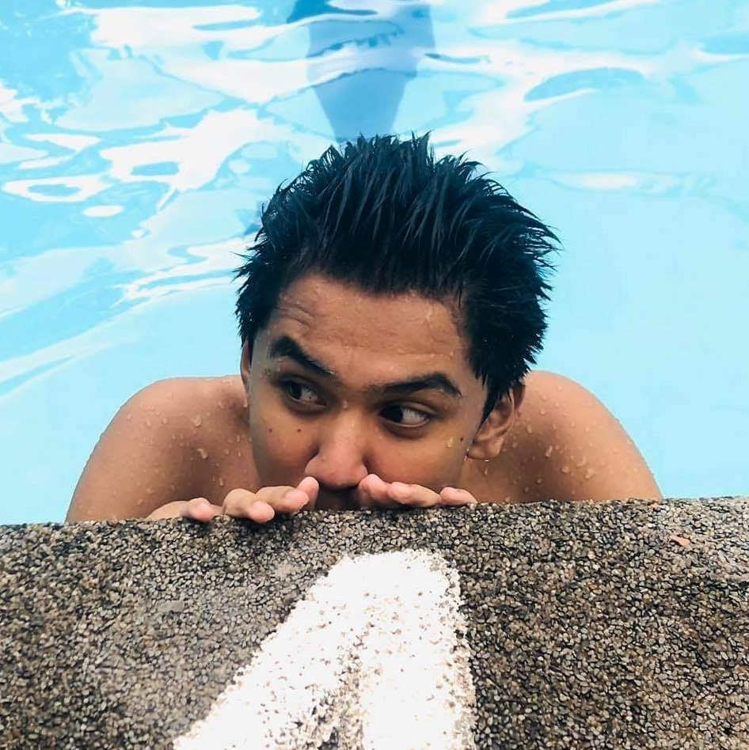

Me Myself and I
SKILLS

Swimming and coding are two skills that I have had the good fortune to learn over time.1 I enjoy both
activities and find that they complement each other in interesting ways.2 Swimming requires
discipline,
focus, and technique, all of which are necessary for coding.3 I learned to be patient with myself and
to stay
committed to my goals while swimming, which has helped me persevere when faced with coding
challenges.4
Coding, on the other hand, has taught me how to think logically and approach problems systematically, skills
that have also helped my swimming technique.5 Swimming and coding can also be social activities, and
I
enjoy
being a part of swim teams and coding groups where I can collaborate with others and learn from their
knowledge.6 Finally, I see my swimming and coding abilities as complementary parts of my overall
personal
development, and I hope to continue improving in both areas in the coming years.7
HOBBIES
In my spare time, I enjoy eating and watching movies.1 While they may not appear to be traditional
hobbies, they
bring me a lot of joy and relaxation.2 I often spend time researching restaurants and planning meals
with friends and family because I enjoy trying new foods and exploring different cuisines.3 I enjoy cooking and
experimenting
with new flavors, as well as the social aspect of sharing a meal with others.4 Similarly, I find that
watching is
an excellent way to unwind after a long day.5 I enjoy the escape that watching provides, whether it's
binge-watching a new TV show or catching up on movies.6 I enjoy losing myself in a story and becoming
immersed in
different worlds and characters.7 While some may consider eating and watching to be passive
activities, I
consider them to be essential components of self-care and personal enjoyment.8 I am able to recharge
and find
balance in my life by engaging in these hobbies.9
and family because I enjoy trying new foods and exploring different cuisines.3 I enjoy cooking and
experimenting
with new flavors, as well as the social aspect of sharing a meal with others.4 Similarly, I find that
watching is
an excellent way to unwind after a long day.5 I enjoy the escape that watching provides, whether it's
binge-watching a new TV show or catching up on movies.6 I enjoy losing myself in a story and becoming
immersed in
different worlds and characters.7 While some may consider eating and watching to be passive
activities, I
consider them to be essential components of self-care and personal enjoyment.8 I am able to recharge
and find
balance in my life by engaging in these hobbies.9
INTEREST
Sports and reading are two of my main hobbies that I enjoy doing in my spare time.1 As someone who
enjoys staying active, I find sports to be an extremely rewarding experience.2 I enjoy the rush of endorphins that
comes with
physical activity, whether it's basketball, soccer, or running.3 Sports also teach me important
lessons about
teamwork, discipline, and perseverance that I can apply to other aspects of my life.4 When I'm not
participating
in sports, I enjoy reading.5 Reading allows me to discover new worlds and ideas, as well as gain a
better
understanding of the world around me.6 I enjoy reading both fiction and nonfiction, and I believe it
helps me
think more critically and creatively.7 Reading also gives me a much-needed break from the stresses of
everyday
life, allowing me to relax and recharge.8 Finally, I see sports and reading as complementary aspects
of my life
that provide me with both physical and mental stimulation, allowing me to be a well-rounded and fulfilled
individual.9
active, I find sports to be an extremely rewarding experience.2 I enjoy the rush of endorphins that
comes with
physical activity, whether it's basketball, soccer, or running.3 Sports also teach me important
lessons about
teamwork, discipline, and perseverance that I can apply to other aspects of my life.4 When I'm not
participating
in sports, I enjoy reading.5 Reading allows me to discover new worlds and ideas, as well as gain a
better
understanding of the world around me.6 I enjoy reading both fiction and nonfiction, and I believe it
helps me
think more critically and creatively.7 Reading also gives me a much-needed break from the stresses of
everyday
life, allowing me to relax and recharge.8 Finally, I see sports and reading as complementary aspects
of my life
that provide me with both physical and mental stimulation, allowing me to be a well-rounded and fulfilled
individual.9